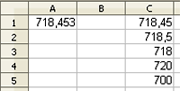

Hojas de cálculo
4.3. Funciones Matemáticas y Lógicas
Funciones matemáticas
Aparentemente, este tipo de funciones son las más conocidas ya que en esta categoría están las que se utilizan con más frecuencia.
Desde la función "ABS (numero)", que devuelve el valor absoluto, hasta la función "TRUNCAR (número;núm_decimales)", que devuelve el valor truncado de un número, hay una gran cantidad de funciones que seguramente habrás utilizado. Vamos a estudiar algunas de ellas:
| SUMA (número_1;número_2) | Devuelve la suma de los números o de los valores contenidos en las celdas o de un rango. |
| REDONDEAR (número;núm_decimales) | Redondea un número o el valor numérico de una celda al número de decimales indicado. |
| POTENCIA (número;potencia) | Devuelve el resultado de elevar el argumento número a la potencia indicada. |
| FACT (número) | Calcula el factorial del número. |
| CONTAR.SI (área;criterios) | Cuenta los argumentos que cumplen las condiciones dadas. |
Evidentemente, no podemos explicar en el tema todas las funciones matemáticas y trigonométricas que podrías utilizar, pero en el programa OOo Calc encontrarás todas las funciones trigonométricas (cálculo de seno, coseno, tangente, arcoseno, seno hiperbólico, etc.), diferentes funciones aritméticas (producto, raíz, logaritmos, múltiplos, etc.) y funciones condicionales (contar si, sumar si).
Comprueba lo aprendido
El siguiente ejercicio muestra una hoja de notas en la que se muestra el número de suspensos y el número de aprobados. En este caso, los alumnos son pocos y sólo hay que contar una columna de notas, pero ¿qué pasaría si tuvieses que realizar esta operación en muchos alumnos y con varias columnas de notas?. Te serviría esta hoja de cálculo si utilizases la función CONTAR.SI.
¿Cómo escribirías dichas funciones?
Para saber más
Una posibilidad de la función "REDONDEAR" es utilizar un número negativo en el número de decimales a redondear. En este caso, el redondeo se realiza a la izquierda del separador decimal. En la siguiente imagen puedes ver un ejemplo de este caso.
| C1 | =REDONDEAR(A1;2) |  |
| C2 | =REDONDEAR(A1;1) | |
| C3 | =REDONDEAR(A1;0) | |
| C4 | =REDONDEAR(A1;-1) | |
| C5 | =REDONDEAR(A1;-2) |
Función lógica Si
Tutorial Función lógica SI
Comprueba lo aprendido
Retroalimentación
Falso
La función lógica O devuelve "verdadero" si alguno de los argumentos son "verdadero".
Retroalimentación
Falso
La función ESTEXTO devuelve "verdadero" si el valor es texto.Retroalimentación
Verdadero
La función ENCONTRAR busca un valor de texto dentro de otro tomando en cuenta las mayúsculas y minúsculas.
Retroalimentación
Falso
Permite elegir un valor de una lista de entre 30 argumentos.
Obra publicada con Licencia Creative Commons Reconocimiento No comercial Compartir igual 4.0